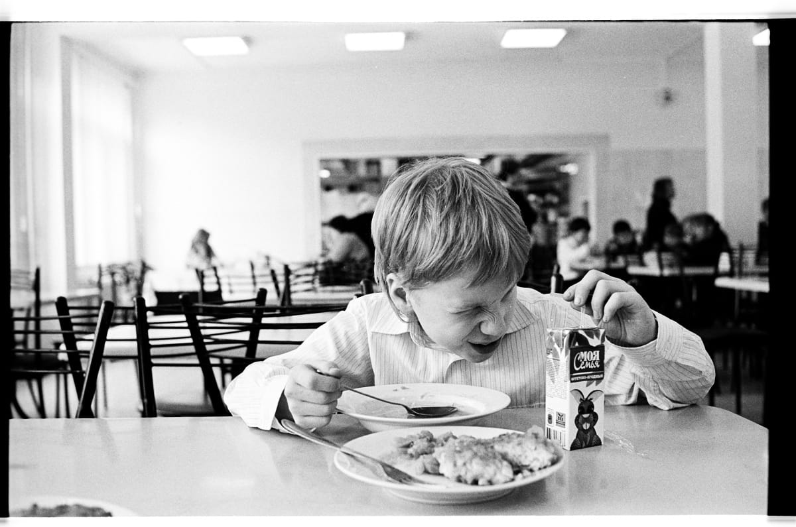
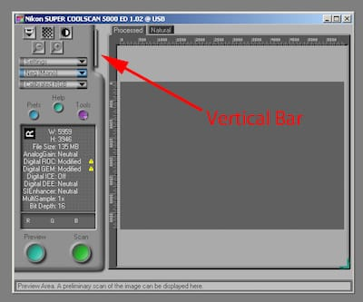

Автопортрет с сыном

Почему-то в московской больнице мы не ставили детям периферические катетеры. Если новорожденному был нужен антибиотик три раза в день, ему делали укол внутримышечно три раза в день. Сейчас для меня это просто дикость — зачем так мучить ребенка? Это больно, он маленький. Более того, если все-таки разрешалось поставить периферический катетер, мы вызывали реаниматолога. Сейчас я уже знаю, что это базовая, ерундовая манипуляция, которую в Израиле делают каждому ребенку сразу при поступлении, чтобы можно было легко и безболезненно взять анализ, ввести лекарство, ввести жидкость, если он обезвожен.
Интересное из статьи на Репаблике от педиатра, которая переехала в Израиль (можно пройти по ссылке и прочитать бесплатно, правда, кажется, придется зарегаться), и напомнила мне о том, что было много лет назад.
Я столкнулся с подобным, когда лежал в больнице с Егором в 2009 году — ему было 5 лет, и три раза в день ему кололи антибиотик в попу, а мне приходилось его держать, потому что он кричал, плакал и вырывался, и от напряжения весь покрывался сеткой от лопнувших каппиляров. Я ему не родной отец, и от этого ему наверное было еще ужаснее, хотя я и сам очень сильно переживал и не понимал зачем так издеваться над ребенком — зачем нужно врубать свет в 6 или 7 утра и со словами "готовим ребенка" и шприцом в одной руке, словно с пистолетом, вламываться в бокс — не понимал, и до сих пор не могу понять. На третий, кажется, день (не знаю, что там произошло и почему они вдруг до нас так снизошли) мне предложили поставить Егору катетер — такую маленькую херню, для которой нужно сделать один прокол и потом просто вставлять в нее шприц столько раз сколько необходимо. Да, это не избавляет от неприятных ощущений от введения лекарства или необходимости этот катетер раз в несколько дней менять — но блин, это же день и ночь по сравнению с уколами — этим совершенно диким издевательством и садизмом.
И зачем я про это снова вспомнил.

Такое странное ощущение, когда на телефоне нет инстаграма или твиттера... да и не только в телефоне, а и вообще — нет.

Я с утра сегодня зачем-то собрал диван. Сейчас пришел и думаю: ну вот зачем — знал ведь, что приду поздно и сразу лягу спать. А теперь пришел — и снова его разбирай. Повел себя как-то совершенно механически.
А на фото мужик спит, ничего не разбирая, прямо посреди Неаполя.
Прочел с удовольствием "Будденброков" (к стыду своему Манна до этого не читал). И хотя в финале, как мне показалось, автор слегка не дожал, перефилософствовал и тп, книжка мне так понравилась, что сразу же захотелось все бросить и поехать в тот самый Любек, погулять по его улочкам, потом выбраться на море в Травемюнде, где бродить вдоль берега, слушая крики чаек, или просто сидеть на камнях.
Уже пять дней лето и еще, похоже, пару дней будет. Роскошь. Отчетливо вдруг захотелось в отпуск, к морю, а до июля еще полтора месяца... жить
А на картинке Катя.

Кажется мне, что еда не сильно изменилась с тех пор, как я сам ходил в школу. Не помню, правда, была ли у нас "пожарная" котлета, но вермишелевый суп по воспоминаниям очень похож.
Классный какой альбом у Моррисона и ДеФранческо. Последнего вообще крайне рекомендую.
Случайно услышал в одном французском фильме.
TWIMC
